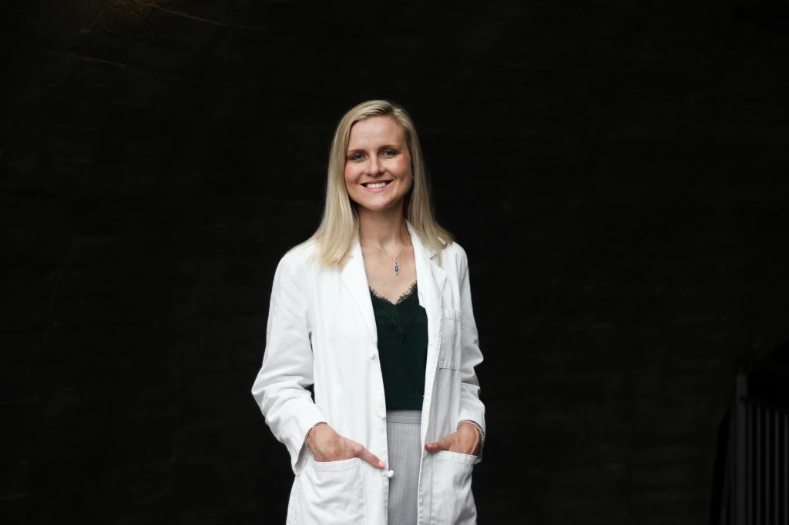
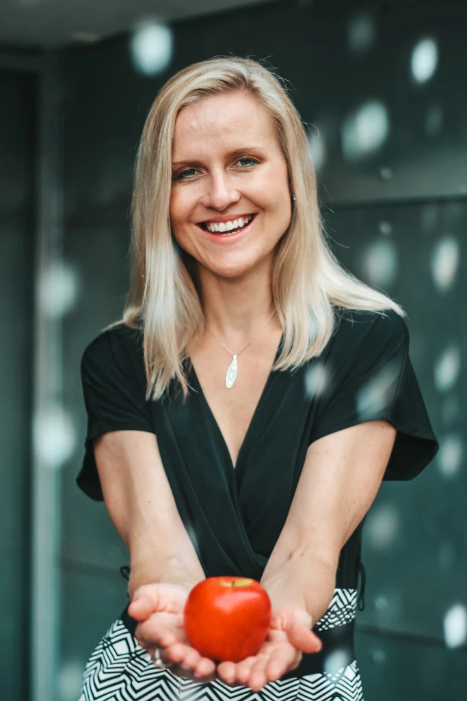
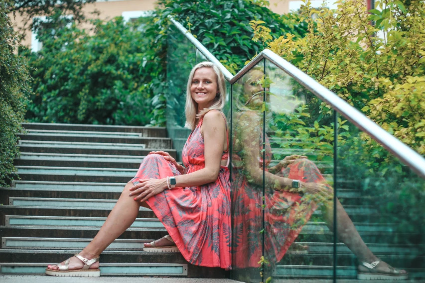
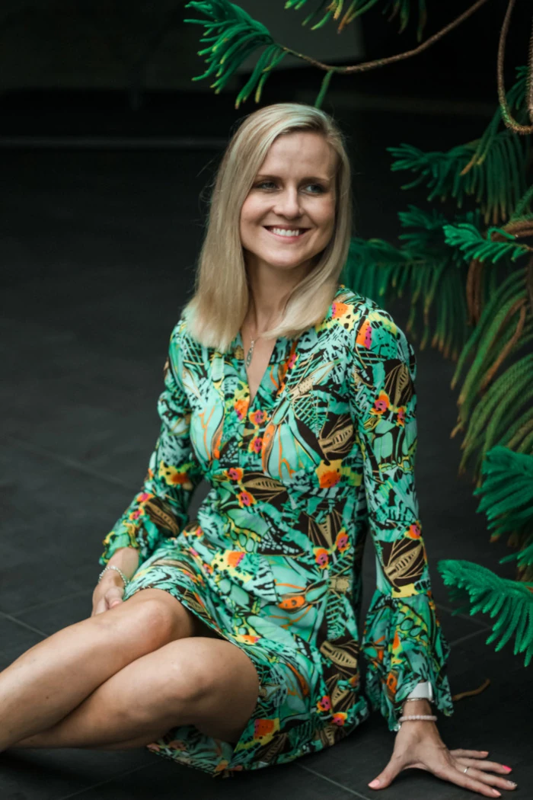

O mně
Jmenuji se Petra Dohnalová a jsem nutriční terapeutka s mezinárodní certifikací (Registered Dietitian Nutritionist – RDN) a specialistka na medicínu životního stylu. Po dlouholeté praxi v klinikách a nemocnicích se nyní zaměřuji na poskytování individuálních online konzultací a skupinových kurzů výživy, které se snadno přizpůsobí vašemu nabitému životnímu stylu.
Možná vás napadá: co přesně je registrovaný dietolog/nutriční terapeut (RDN)? Je to certifikovaný odborník na výživu, který poskytuje personalizované a vědecky podložené doporučení pro zlepšení zdraví a zvládání zdravotních obtíží.

A teď trochu víc o mně — jsem velká milovnice jídla. Proč je to důležité? Protože spolupráce s někým, kdo jídlo opravdu miluje, znamená, že vaše stravování nebude nikdy nudné. Ráda zkoumám světové kuchyně, takže vím, jak udělat zdravé jídlo chutné, syté a lákavé na pohled. Pokud jste také „foodie“, přesně víte, o čem mluvím.
Jsem také celoživotní sportovkyně. Možná jsem nikdy nesoutěžila na olympiádě, ale pohyb byl vždy součástí mého života, ať už jsem procházela čímkoli. Z vlastní zkušenosti vím, že pohyb nepodporuje jen fyzické zdraví, ale i psychickou pohodu.

Sdílím to proto, že zdravý životní styl jen neučím — já ho i žiju. Po letech studia, praxe a hledání toho, co skutečně funguje, jsem tady od toho, abych vás provedla cestou ke zdraví a pohodě bez zbytečného tápání. Nemusí to trvat celý život a nemusíte na to být sami — pomůžu vám pracovat chytřeji, ne tvrději.
Jste zaneprázdněný profesionál, který se cítí vyčerpaný, zahlcený nebo už řeší první zdravotní problémy, jako je vysoký krevní tlak, prediabetes nebo nízká energie? Nebo už žijete s chronickým onemocněním, které se snažíte zvládnout? Chcete se cítit lépe, ale složité diety nebo extrémní změny životního stylu do vašeho života prostě nezapadají? Rozumím vám — a právě proto jsem tady.
Specializuji se na stravování založené převážně na rostlinných potravinách, které se přizpůsobí vašemu životnímu stylu — bez tlaku stát se úplným veganem. Jen flexibilní a praktické kroky, které vám dodají více energie, zlepší vaše zdraví a hlavně budou dlouhodobě udržitelné.

Zde je, co pro vás mohu udělat:
-
Ukážu vám, jak zařadit více rostlinných a celozrnných potravin tak, aby to zapadalo do vašeho nabitého programu i chuťových preferencí.
-
Podpořím vás strategiemi medicíny životního stylu — výživa, spánek, stres, pohyb a další — protože vaše zdraví závisí na celkovém obrazu.
-
Pomohu vám zmírnit nebo zvládat chronická onemocnění, jako je cukrovka 2. typu, vysoký krevní tlak nebo zvýšený cholesterol, prostřednictvím osobních a realistických plánů.
-
Provedu mladé dospělé při přechodu na veganskou nebo rostlinnou stravu a zajistím, aby měli jistotu, že dostávají všechny potřebné živiny.
-
Mohu pracovat s těmi, kteří se potýkají s dlouhodobými zdravotními obtížemi, a pomohu jim zlepšit kvalitu života prostřednictvím soucitných a uskutečnitelných strategií.

Všechny moje služby jsou online — individuální poradenství i skupinové kurzy — takže získáte odbornou podporu odkudkoli a podle svého času.
Pokud jste připraveni přestat se cítit unavení a zahlcení a místo toho začít žít s vitalitou, energií a pocitem kontroly nad svým zdravím, jsem připravena vám s tím pomoci.